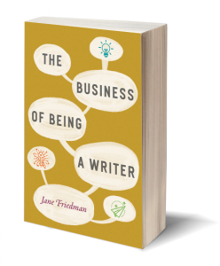
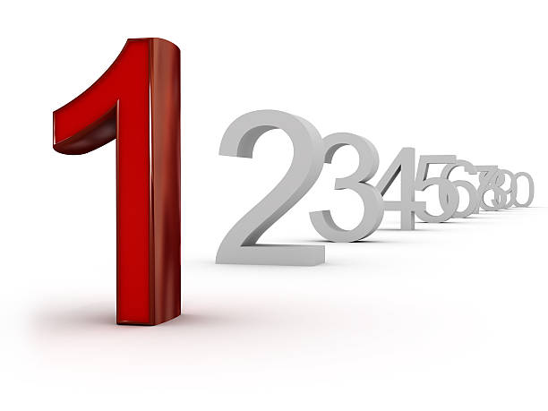

A bestseller is a book or other media noted for its top selling status, with bestseller lists published by newspapers, magazines, and book store chains.
I've seen "New York Times Bestseller" written across the top of more books than I can count. It seems every
other
book I look at has this advertisement, so much so that I discount it as a meaningful accomplishment.
But what does it really mean? Is it based on number of copies sold? Does the New York Times actually have
editors
read the books and only choose ones that they enjoyed enough?
It means that a book has been - for any length of time - on the New York Time's Best Seller's List. This
list
aggregates
sales data from thousands of venues for several different genres of books. It gathers data weekly and the data
is
published two weeks after data gathering (so the November 28 print edition contains the November 14th data).

Being a New York Times best seller
is not necessarily an index of quality . It is an index of
"hotness."
A
book is moving fast to make it onto that list. The idea behind advertising it is to help the book pick up even
more
steam. If a book spends several weeks on the list, this is an indication of a book that sells extremely well.
The reason that it seems like this encompasses so many books is that you hear about books that are NYT best
sellers
because they are being purchased, read, and talked about. The reality is that this list contains fewer books
than
you
would think.
What it Takes to be ranked as a Bestseller
- Selling a large number of copies (over 500 copies daily)
- Having a high Amazon sales rank
- Selling 35,000 copies of your book grants you a best-seller status
However, a book that never appears on the New York Times Bestseller list may well be a bestseller and outsell
books
on that list
over time.
Other books, like the Bible, “A Tale of Two Cities” or “Pride and Prejudice” never appear on bestseller lists but they continue to sell steadily and have far outsold most books making the bestseller lists simply by their quality, word of mouth, and acceptance as great literature.
| Book | Author(s) | Copies Sold |
|---|---|---|
| The Lord of the Rings | J.R.R Tolkien | 150 million |
| Harry Potter and the Philosopher's Stone | J.K Rowling | 120 million |
| The Adventures of Pinocchio | H. Rider Haggard | 83 million |